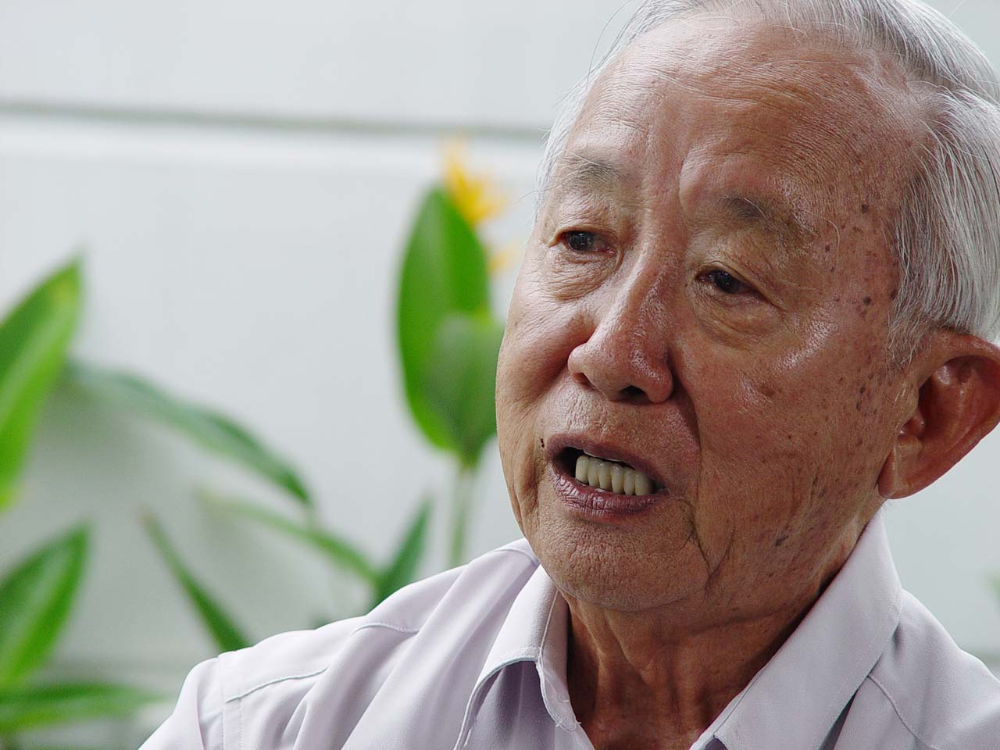
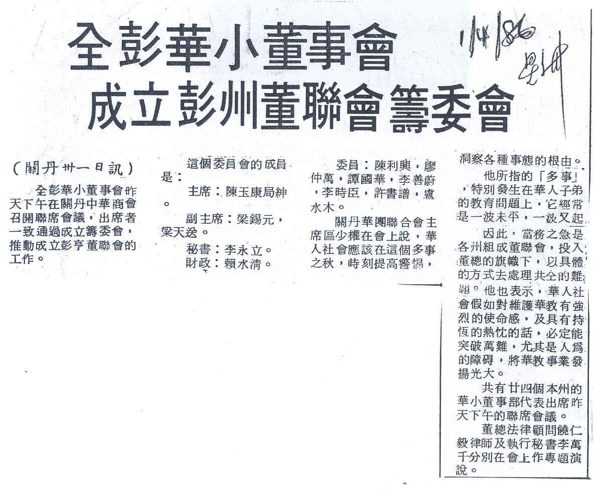
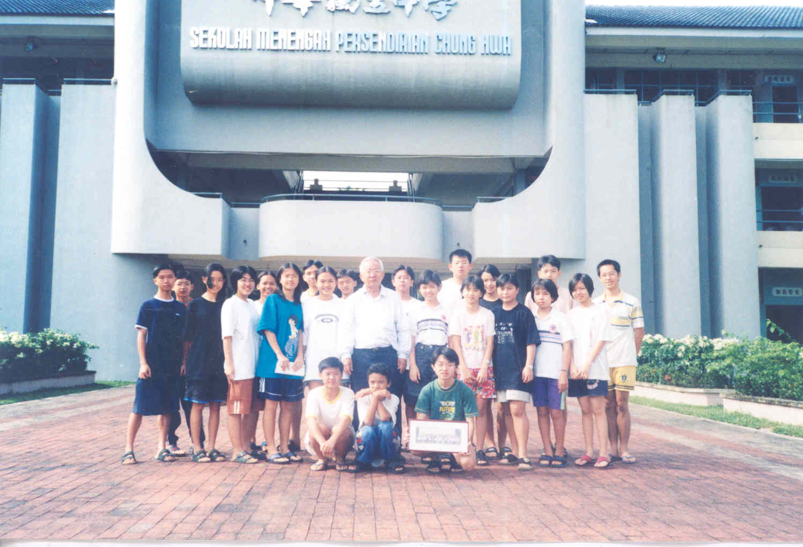

敢怒·敢言·敢为 不平则鸣 华教元老陈玉康（下篇）
（二）投入社团活动 参与华教工作
事业有成之后，陈玉康局绅再次投入社会活动，分别在各个社团组织担任要职，如理事、会长、秘书、财政、总务、学校董事长等等。韬光养晦数载，他已不再是默默无闻的教师，以雄厚的经济实力和人际关系为后盾，为彭亨州的华文教育运动掀起一股新浪潮。
1977年，陈局绅创办了彭亨福州十邑会馆，于1978年获得注册证，并出任主席职长达12年。1981年出任马来西亚福州社团联合会总务，发起福州总会大学基金计划，让贫寒学生有机会深造。1984年，他参与推动及成立彭亨华人社团联合会，同时，他也积极参与慈善活动。
“第一个社会工作是我们的同乡会——福州会馆。我是福州人，就创办彭亨州的福州会馆。我是创办人，我也做了这个福州会馆的主席十多年，同时我也做了这个马来西亚福州总会的总务，那个时候我又发起这个同乡的大学贷学金，那个也是我的意见创办的。”
“那么我就起初就是创办福州会馆，到处去筹钱起福州会馆，过后加进中华商会。中华商会的时候我就进去是理事，然后就选为副主席，那么光华学校的校地是这个中华商会的这个建筑物，所以中华商会必须派三个代表加进光华的董事的阵容，那么我就被推荐加进光华的董事部。那么第二年我就被选为光华学校的董事长……”
投身华教运动
陈局绅与华教事业结缘，可从他参与社团活动多年后，即1983年代表关丹中华总商会进入关丹光华华小董事会说起。当时他担任该华小的董事长，为了解决学校空间拥挤的问题，以他为首的董事会努力开展搬迁计划。1986年，他受邀出任关丹中菁华小的董事长，在他的号召下，中菁华小成功发动重建校舍筹款计划。1989年彭亨华校董事联合会成立，陈局绅众望所归获选为第一届主席。陈局绅于1995年开始出任董总常委，两年后获选为董总财政（1997年-1999年）。
创立彭亨华校董事联合会
80年代是华教风雨飘摇的艰难时期，政府试图通过种种教育政策来变质华小，诸如于1982年试行“3M制”新课程、1984年发生的“华小集会用语事件”、1985年推行“综合学校计划”等，让华社疲于应付。当时还是光华华小董事长的陈局绅，觉得需要一个能凝聚社会各阶层力量的组织来负起领导和推动州内华教的工作，从而配合全国华教的力量，争取母语教育的权益和地位。
陈局绅那时候在彭亨华人社团联合会担任秘书，遂以彭亨华人社团联合会的名义发函邀请州内各华小的董事，于1986年3月30日共同商讨如何应对当时的种种华教问题。会议一致通过成立一个以陈局绅为首的彭亨华校董事联合会筹委会，负责起草章程及向社团注册局申请注册事宜。
筹委会于1987年4月向注册局提呈申请注册所需的文件。那一年的10月，教育部派遣大批不具华文资格的教师到华小担任行政高职，引起华社强烈反弹，进而发生大规模的抗议行动。10月底，政府援引《内安法令》展开“茅草行动”，逮捕华教四位领导人及党团百多人。在这样的背景之下，筹建彭亨华校董事联合会的申请自是波折重重。
“……那个时候我也是在彭亨华团担任秘书，以这个彭亨华团的身份发出函件，因为没有董联会嘛，光华学校也不能够召集所有的人，唯一的就是彭亨华团，这也是华社的事情。那么就召集他们在1986年的3月30日，召集彭亨州里面的75间的华小，但是没有全部出席，大概有60%，差不多40个人出席。那么这个时候出席的就交流各学校的问题啦，那么应该怎样去处理，那么很多人就建议应该成立董事联合会，彭亨州的董事联合会，因为其他州……除了彭亨、丁加奴、吉打以外，其他的都有了，那个时候，然后就异口同声地赞成成立，那么那个时候因为我话讲得太多，那么看起来……人家就认为话讲多应该做事，所以他们就推选我领导咯！所以我很小心，很慎重的，然后好，那么就议决怎样去申请，那么全部的资料由我去找这些资料，那么那个时候我就在各方面去找，那么董总的一些人，我那个时候也认识啦，那么找了那个章程之类，筹备了差不多几个月以后，1987年再召集一次会议，然后把表格呈交上去。同年8月，在没有任何理由之下就被社团注册局驳回，不批准。”
经过一番努力后，社团注册局终于在1989年11月发出正式注册证予彭亨华校董事联合会。彭亨董联会于1989年12月24日召开成立大会，并顺利选出第一届理事会，陈局绅当选第一届主席。
1986年4月1日，《星洲日报》剪报。彭亨董联会正式成立后，在主席陈局绅的率领下，走遍州内各大城小镇的75所华小进行访问与交流，除了凝聚共识，也借此呼吁州内各县成立华小工委会。为了进一步巩固组织，彭亨董联会在1991年也发起“董联义跑”活动，目的是为董联会与各县发展华小工委会筹募活动基金。
“第一个步骤呢，我就全州75间的学校，大大小小呢都去访问，跟他们交流，拿资料他们的问题在哪里，那么同时也呼吁，叫他们也成立各县的华小工委会。因为你每一间学校跟他联系就麻烦啦，所以假如你有什么事情呢，一州有一个小组织，你打电话的时候，他就可以去拿资料，所以我们的资料要的话，只要跟那个发展华小工委会呢联络就可以了，然后这个整个州的各县的发展华小工委会成立以后，第二个步骤做什么呢？推动一个董联义跑，董联义跑呢又到各县的发展华小工委会的配合，义跑筹款，60%给董联会，40%给各地的发展华小工委会作为活动基金。那么这个时候呢我们就成立了彭亨州的各县的义跑筹款，就到各县去，除了筹款以外，跟他们交流、联系，配合这样……”
独中保送生计划
1992年，彭亨董联会发出复办独中的呼声，召集州内热心华教人士探讨在彭亨州复办独中的可能性。然而，辗转翻腾了数年尚未见眉目。眼看州内数十年来没有一所华文中学，陈局绅心疼华裔子弟无法在中学接受中学母语教育，毅然发起了“独中保送生计划”，保送彭亨州内家境清寒、品学兼优的华小生到全国各地的华文独中接受中等教育。
“嗯……我的看法呢就是一句讲完，政府对人权……剥夺人权，因为母语教育，每一个民族都有自由发展母语，所以我们的……好像说小学念完了，那么这些学生要延续母语教育呢，就出了问题，虽然说可以到州外去，你要懂得十二岁的孩子到……离乡背井，即使家长有经济能力，他们也不放心，第二点，假如离乡背井去念独中，独中的教育费蛮高的，所以假如他们一个学生在州外念的话呢，最少都要五到六千块，所以普通的人，他能够送一个去，也不能够送两个去，所以在这种情形之下呢，彭亨州没有独中，唯一的就要做出牺牲，到……没有选择的余地之下就要到国中去。那么这些问题呢出在这些郊外、郊区小的学校，那么这些小的学校去的附近呢，没有说国民型中学，国民型中学是过去华文中学改制了叫国民型中学，这些都是到国民中学去，那么这些老师跟学生清一色多半都是马来人，他们在语文的障碍或是老师懒散等等，他们就在那个学习的情况不感兴趣就放弃了，或是跟不上就放弃了。那么在这种情形，我就看到很可怜，我们华人的子弟就慢慢地，能够成人成才的都消失掉，去割树胶，就变成蠢材了，所以我看起来不行，争取复办独中……”
陈局绅投入不少心血与汗水来推动“独中保送生计划”，他不但亲自征求领养人（资助固定数额予个别保送生），还去征求赞助人赞助保送生计划，甚至参与遴选学生、分配学校、联系接收保送生的校方等工作。对保送生，他关怀备至，从生活琐事到学校的学习过程，他处处关心。为了与保送生维持紧密的联系，他更是不辞劳苦地定期探访。陈局绅对“独中保送生计划”所展现的毅力与热诚，充分体现在他不求回报与不计付出的真心，殷殷期盼他的“孩子”在六年的中学母语教育的栽培下，能够做个学以致用，懂得回馈社会的人。
陈玉康局绅经常与保送生维持紧密的联系。“我最安慰的是，这些学生都能够成人成才，所谓我讲到成人成才就是他的人格、品格，能够受到我接受的，就是饮水思源、知恩感恩。”
在陈局绅多年的努力下，终于在彭亨州造就了一所“没有校园的独中”，为彭亨州华社的孩子开启了另一条光明的升学路。
“可以说保送生计划也是一种机缘，给我一个机会，我才有机会做，假如彭亨州有独中的话，这种保送生计划也不能够做，也没有机会做，这个就叫做机缘，叫做时势造英雄。就是说非常平凡的人做到不平凡的事，但是我自己也不觉得我自己……全部自己可以发动，我就觉得这个计划能够受到大家认同，大家能够口服心服，很多人在很低调地在背后支持我。”
因个人健康 从职位退下
2002年，陈局绅在一次演讲中在台上昏倒，送进医院后，医生宣布中风，仍在昏迷中的他，有可能醒不过来。厚道之人，必有厚福，陈局绅度过了这一刧。他后来开玩笑说：“可能阎罗王的程序没有处理好，所以就让他给溜回来了”。这之后，他辞去了彭亨董联会主席和中菁华小董事长的职务，专心养病。同年，陈局绅荣获林连玉基金颁发的“2002年林连玉精神奖”，肯定了他这一生为华文教育所作出的无畏无私的贡献。
“因为我参加华教工作啊，我觉得很投入，好像很有兴趣这样，好像是小孩子玩泥沙，很有兴趣这样，所以我也不见得有什么东西失掉的，所以我只想到我得到的，因为你看保送这些学生，他们都很听话，都很成人。你看我今天去哪里啊，人人会过来跟我握手一下，你所做的事情很好啊，没有一个人可以取代你啊这些言论啊，都是异口同声讲这些话。我就是说我虽然没有势没有权，但是人家尊敬尊重我的人蛮多，我很安慰，我根本没有东西失掉的，我只是得。”
虽然基于健康理由，卸下社团和学校的职务，无法在华教第一线工作，但他对社会及华教的关心不轻言休，纵使体力不比当年，他也不时发出呼声，展现不平则鸣，有所作为的本色，勇敢地站在最前线。
（三）豁达的人生，无怨无悔
口述历史团队最后一次专访陈玉康局绅，他以以下一段话来为他这一生参与华教事业作了一个概括性的总结：
“我觉得我的一生过得非常有趣。老实说，很多时候人家不要的东西我就去捡（广东发音），人家没有想到的事情我就去做，例如当时争取复办独中，政府的态度很敷衍。”
“……保送生，我说即使你不能够成才我也要你成人。所以我很感动的，这个保送生，我都要练到他每个，最少有五巴仙能够像我这样傻气的，我就不怕说华文教育没有明天……的这个光明。假如有五个的话阿，五巴仙的话，我两百多个有10个陈玉康哦。哈，对不对，是了不起的哦。所以我觉得我这个一生阿，做得……实在得……自己觉得很安慰，很安慰的。”
他希望能够唤起更多人重视自己作为马来西亚公民的权利，善用自己的权利改变现状，包括促使政府公平对待华文教育的发展，落实各族群权益平等的宏愿，实现民主开放和自由公正的施政。
“我们不要太失望，太消极，很多东西，假如你能够团结一致，能够有愚公移山的精神，渐渐地去推动，总有一天会改朝换代，会有公平合理。不是没有可能的，就是说那个宪法里面，我们能够团结一致，能够修改我们的宪法。可能的，我对这个没有说失望、说不可以的。只是我们大家认同一个方向，人权平等。”
华教的路很是漫长，崎岖的路要走、风雨交加的路也要走，他坚信，只要大家的步伐和方向一致，一切的付出，一切的努力，一定能够到达华教公平发展的一天。
“敢怒敢言，不平则鸣；据理力争，坚持到底”
陈玉康局绅语录：
• 嘴讲是不够的，你要真的动作，行动，做出来。
• 存好心，讲好话，做好事，我开心，大家也开心，我快乐，大家也快乐。
• 我认为要搞华教，就要专心的搞。我呢，分秒必争，有时间就谈，有机会就跟人家讲。
• 我觉得我是一个非常傻气，但是我也觉得傻人有傻福，上天会保佑。
• 假如一个人会害怕得罪人呢就很难做事，我有一个原则，很多事件呢我是帮理不帮亲。
• 我就是说我虽然没有势没有权，但是人家尊敬我的人蛮多，我很安慰，我根本没有东西失掉的，我只是得。
• 你做人清楚，布施，然后才能够改变。其实很多人你讲到布施呢，他就讲要出钱，其实布施最经济的笑容。
• 待人处事要有真心来看待，真的心啊，不要用鬼心，不要用假心，不要疑心疑鬼，就没有事了。
• 办这个华文学校，捍卫华小，捍卫华教啊是要训练很多傻子，傻傻的，天真的，幼稚的人，他才敢冲。